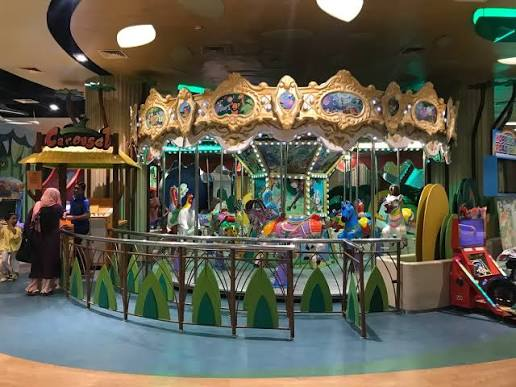
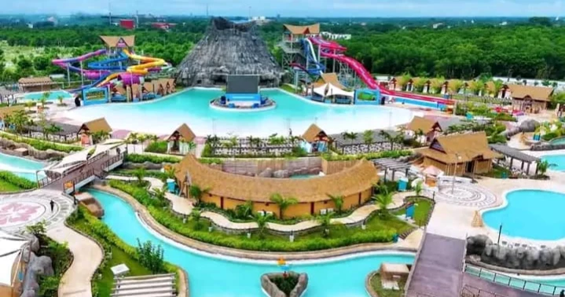

1. TOGGI FUN WORLD

Located in Bashundhara City Shopping Mall in Panthapath, it is Bangladesh's largest amusement & VR theme park. It includes laser tag, arcade games, kid's bowling, playzone etc. It is perfect for a fun and exciting day with friends.
2. MANA BAY

It is located in Bausia, Gazaria, Munshiganj, about 40km from Dhaka. It features 17 to 19 major water attractions such as water slides, wave pools, lazy rivers. it also includes kids swimming area, and a spa facility. It is absolutely perfect for a relaxing day with your family and friends.